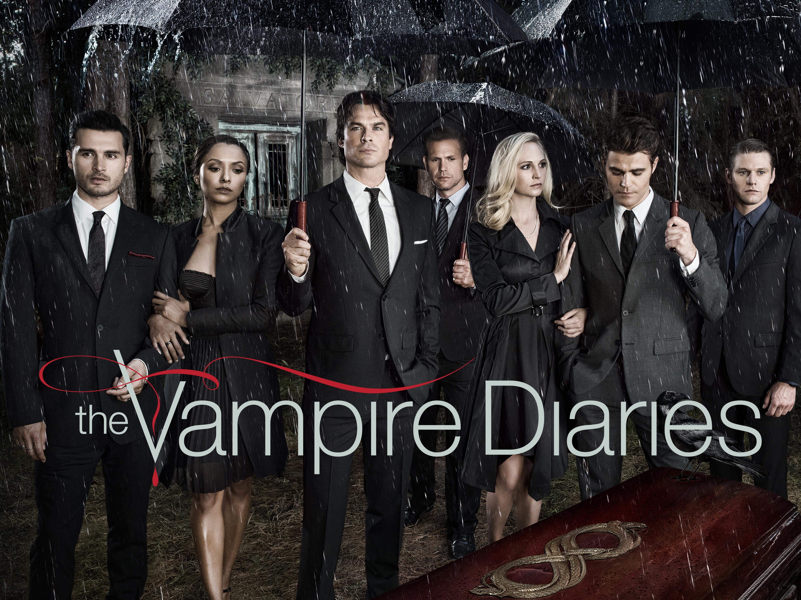

¿Por qué Vampire Diaries?

Vampire Diaries es una serie estadounidense que mezcla drama, romance y elementos sobrenaturales. La historia sigue a Elena Gilbert, una joven que se ve envuelta en el mundo de los vampiros, brujas y hombres lobo en el misterioso pueblo de Mystic Falls.
Temas: familia, amistad, sacrificio y la lucha entre el bien y el mal.